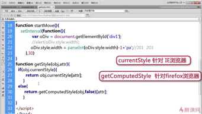
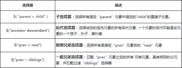
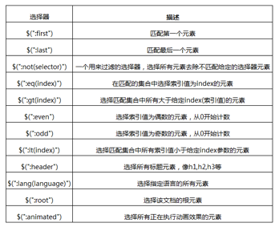
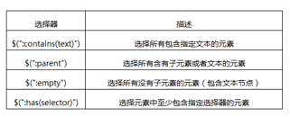
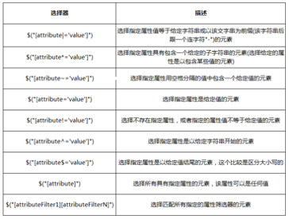
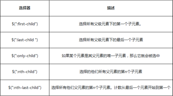
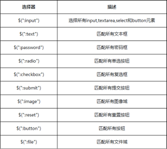
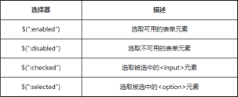

11月7日 周一
成就：
1.学习《JS动画》到4.2
2.学习《jQuery基础》到1.4
笔记：
1 速度（改变值left、right、width、height、opacity）:
2 缓冲运动；
3 多物体运动；

4 任意值变化；
5.链式运动；
6.同时运动；
二．缓冲运动，速度判断时，要取整。Math.floor()向下取整；Math.ceil()向上取整；Math.round()四舍五入；var speed = speed>0?Math.ceil(speed):Math.floor(speed);
三．多物体运动，参数不能公用，要定义成obj[i].timer。
11月8日 周二
成就：学到《jQuery基础》2.1
笔记：
1.jQuery是一个类数组对象，而DOM对象就是一个单独的DOM元素
2.jQuery对象转化成DOM对象
var $div = $('div') //jQuery对象
var div = $div[0] //转化成DOM对象
或者
var div = $div.get(0) //通过get方法，转化成DOM对象
div.style.color = 'red' //操作dom对象的属性
11月9日 周三
成就：学到《jQuery基础》2.9
笔记：
id选择器：一个用来查找的ID，即元素的id属性，
$( "#id" )类选择器，通过class样式类名来获取节点：
$( ".class" )元素选择器：根据给定（html）标记名称选择所有的元素:
$( "element" ),$("p")全选择器：设置所有的元素：
$( "*" )层选择器
基本筛选器
内容筛选选择器
可见性筛选选择器
$(“:visible”)与$(“:hidden”)
11月10日 周四
时间：上午2h,下午2h
成就：学到《jQuery基础》3.3
笔记：
1.属性筛选选择器

2.子元素筛选选择器

3.表单元素选择器

4.表单对象属性筛选选择器

5.attr()与removeAttr()attr(传入属性名)：获取属性的值attr(属性名, 属性值)：设置属性的值attr(属性名,函数值)：设置属性的函数值attr(attributes)：给指定元素设置多个属性值，即：{属性名一: “属性值一” , 属性名二: “属性值二” , … … }
6..html()与.text().html() 不传入值，就是获取集合中第一个匹配元素的HTML内容.html( htmlString ) 设置每一个匹配元素的html内容.html( function(index, oldhtml) )用来返回设置HTML内容的一个函数.text() 得到匹配元素集合中每个元素的合并文本，包括他们的后代.text( textString ) 用于设置匹配元素内容的文本.text( function(index, text) ) 用来返回设置文本内容的一个函数
7.val()
11月11日 周五
成就：学完《jQuery基础》(一),学到《jQuery基础》(二) 4.5
感悟：
差不多了解了jQuery的用途，按照大牛给的学习路线，应该在学好HTML5和CSS的前提下，学习原生JS，再学习jQuery框架，大致掌握之后就可以抛弃jQuery，然后好好啃JS高级教程，然后再去学react，Vue，nodejs，ajax~还有很长的路要走！本周学完jQuery四章，然后下周啃完JS，下下周啃react，Vue，nodejs，ajax；然后在准备一下面试，十二月出去实习！
笔记:
1.addClass()方法
.addClass( className ) : 为每个匹配元素所要增加的一个或多个样式名
.addClass( function(index, currentClass) ) : 这个函数返回一个或更多用空格隔开的要增加的样式名
2.removeClass( )方法
.removeClass( [className ] )：每个匹配元素移除的一个或多个用空格隔开的样式名
.removeClass( function(index, class) ) ： 一个函数，返回一个或多个将要被移除的样式名
3.toggleClass( )方法：在匹配的元素集合中的每个元素上添加或删除一个或多个样式类,取决于这个样式类是否存在或值切换属性。即：如果存在（不存在）就删除（添加）一个类
.toggleClass( className )：在匹配的元素集合中的每个元素上用来切换的一个或多个（用空格隔开）样式类名
.toggleClass( className, switch )：一个布尔值，用于判断样式是否应该被添加或移除
.toggleClass( [switch ] )：一个用来判断样式类添加还是移除的 布尔值
.toggleClass( function(index, class, switch) [, switch ] )：用来返回在匹配的元素集合中的每个元素上用来切换的样式类名的一个函数。接收元素的索引位置和元素旧的样式类作为参数
4.css() 方法：获取元素样式属性的计算值或者设置元素的CSS属性
获取：
.css( propertyName ) ：获取匹配元素集合中的第一个元素的样式属性的计算值
.css( propertyNames )：传递一组数组，返回一个对象结果
设置：
.css(propertyName, value )：设置CSS
.css( propertyName, function )：可以传入一个回调函数，返回取到对应的值进行处理
.css( properties )：可以传一个对象，同时设置多个样式
5.jQuery节点创建与属性的处理
var div = $("<div class='right'><div class='aaron'>动态创建DIV元素节点</div></div>") $body.append(div)
6.DOM内部插入append()与appendTo()
append()前面是被插入的对象，后面是要在对象内插入的元素内容
appendTo()前面是要插入的元素内容，而后面是被插入的对象
7.DOM外部插入after()与before()
after向元素的后边添加html代码，如果元素后面有元素了，那将后面的元素后移，然后将html代码插入
before向元素的前边添加html代码，如果元素前面有元素了，那将前面的元素前移，然后将html代码插
8.DOM内部插入prepend()与prependTo()
.prepend()方法将指定元素插入到匹配元素里面作为它的第一个子元素 (如果要作为最后一个子元素插入用.append()).
.prepend()和.prependTo()实现同样的功能，主要的不同是语法，插入的内容和目标的位置不同
9.DOM外部插入insertAfter()与insertBefore()，不支持多参数处理
.before()和.insertBefore()实现同样的功能。主要的区别是语法——内容和目标的位置。 对于before()选择表达式在函数前面，内容作为参数，而.insertBefore()刚好相反，内容在方法前面，它将被放在参数里元素的前面
.after()和.insertAfter() 实现同样的功能。主要的不同是语法——特别是（插入）内容和目标的位置。 对于after()选择表达式在函数的前面，参数是将要插入的内容。对于 .insertAfter(), 刚好相反，内容在方法前面，它将被放在参数里元素的后面
10.DOM节点删除之empty()
empty()不仅移除子元素（和其他后代元素），同样移除元素里的文本。因为，根据说明，元素里任何文本字符串都被看做是该元素的子节点。
11.DOM节点删除之remove()的有参用法和无参用法
remove与empty一样，都是移除元素的方法，但是remove会将元素自身移除，同时也会移除元素内部的一切，包括绑定的事件及与该元素相关的jQuery数据。$("p").filter(":contains('3')").remove()
- DOM节点删除之保留数据的删除操作detach()
$("div").detach()这一句会移除对象，仅仅是显示效果没有了。但是内存中还是存在的。当你append之后，又重新回到了文档流中。
11月12日 周六
成就：学到《jQuery基础》(二)5.5
感悟：多自习，少睡觉
笔记：
1.DOM拷贝clone()
.clone()方法深度 复制所有匹配的元素集合，包括所有匹配元素、匹配元素的下级元素、文字节点。
$("div").clone() //只克隆了结构，事件丢失；
$("div").clone(true) //结构、事件与数据都克隆
2.DOM替换replaceWith()和replaceAll()
.replaceWith( newContent )：用提供的内容替换集合中所有匹配的元素并且返回被删除元素的集合；
$("p:eq(1)").replaceWith('<a style="color:red">替换第二段的内容</a>')；$('<a style="color:red">替换第二段的内容</a>').replaceAll('p:eq(1)')
3.DOM包裹wrap()方法
要将元素用其他元素包裹起来，也就是给它增加一个父元素
$('p').wrap('<div></div>')
$('p').wrap(function() {return '<div></div>';})
4.DOM包裹unwrap()方法
将匹配元素集合的父级元素删除，保留自身（和兄弟元素，如果存在）在原来的位置。
5.DOM包裹wrapAll()方法
wrap是针对单个dom元素处理，wrapAll方法将集合中的元素用其他元素包裹起来，也就是给他们增加一个父元素$('p').wrapAll('<div></div>')是统一加一个父级
$('p').wrapAll(function() {return '<div><div/>'; })是分别加一个父级
11月13日 周日
成就：学完《jQuery基础》(二)，学到《jQuery基础》(三) 2.2
笔记：
1.DOM包裹wrapInner()方法
给集合中匹配的元素的内部，增加包裹的HTML结构
2.jQuery遍历之children()方法
只找第一级的子节点，不找孙子
3.jQuery遍历之find()方法$("div").find("li")；
find查找范围包括子节点的所有后代节点
4.jQuery遍历之parent()方法
只会向上查找一级, 无参数
5.jQuery遍历之parents()方法
parent只会查找一级，parents则会往上一直查到查找到祖先节点$( "html" ).parent()方法返回一个包含document的集合，而$( "html" ).parents()返回一个空集合。$('.item-b').parents('.first-div').css('border', '2px solid blue')
6.jQuery遍历之closest()方法$("div").closet("li")
起始位置不同：.closest开始于当前元素 .parents开始于父元素
遍历的目标不同：.closest要找到指定的目标，.parents遍历到文档根元素，closest向上查找，直到找到一个匹配的就停止查找，parents一直查找到根元素，并将匹配的元素加入集合
结果不同：.closest返回的是包含零个或一个元素的jquery对象（返回最先匹配的祖先元素），parents返回的是包含零个或一个或多个元素的jquery对象
7.jQuery遍历之next()方法,下一个同辈元素
8.jQuery遍历之prev()方法，上一个同辈元素
9.jQuery遍历之siblings()，所有同辈元素
- jQuery遍历之add()方法, 创建一个新的jQuery对象 ，新的元素添加到匹配的元素集合中
处理一：传递选择器:$('li').add('p')
处理二：传递dom元素:$('li').add(document.getElementsByTagName('p')[0])
处理三：就是动态创建P标签加入到合集，然后插入到指定的位置，但是这样就改变元素的本身的排列了：$('li').add('<p>新的p元素</p>').appendTo(目标位置)
11.jQuery遍历之each()
each是一个for循环的包装迭代器
each通过回调的方式处理，并且会有2个固定的实参，索引与元素
each回调方法中的this指向当前迭代的dom元素
12.jQuery鼠标事件之click与dbclick事件
//第一种
$("button:eq(0)").click(function() {alert(this)})
//第二种
$('p').click(function(e) {alert(e.target.textContent) })
//this指向button元素
$("button:eq(1)").click(function() {$('p').click() //指定触发绑定的事件})
//第三种
function data(e) { alert(e.data) }
function a() {$("button:eq(2)").click(1111, data)}
a();
在同一元素上同时绑定 click 和 dblclick 事件是不可取的。
11月14日 周一
成就：学到《jQuery基础》(三) 3.1
笔记：
1.jQuery鼠标事件之mousedown与mouseup事件
mousedown强调是按下触发
如果在一个元素按住了鼠标不放，并且拖动鼠标离开这个元素，并释放鼠标键，这仍然是算作mousedown事件
任何鼠标按钮被按下时都能触发mousedown事件
用event 对象的which区别按键，敲击鼠标左键which的值是1，敲击鼠标中键which的值是2，敲击鼠标右键which的值是3
mouseup强调是松手触发，与mousedown是相反的
mouseup与mousedown组合起来就是click事件
如果用户在一个元素上按下鼠标按键，并且拖动鼠标离开这个元素，然后释放鼠标键，这仍然是算作mouseup事件
任何鼠标按钮松手时都能触发mouseup事件，用event 对象的which区别按键，敲击鼠标左键which的值是1，敲击鼠标中键which的值是2，敲击鼠标右键which的值是3
2.jQuery鼠标事件之mousemove事件
mousemove事件是当鼠标指针移动时触发的，即使是一个像素
如果处理器做任何重大的处理，或者如果该事件存在多个处理函数，这可能造成浏览器的严重的性能问题
3.jQuery鼠标事件之mouseover与mouseout事件
var n = 0;
//不同函数传递数据
function data(e) {$(".right a").html('mouseover事件触发次数：' + (++n) + '<br/> 传入数据为 ：'+ e.data) }
function a() {$(".right p:first").mouseover('data = 慕课网', data)}
a();
4.jQuery鼠标事件之mouseenter与mouseleave事件
mouseenter事件和mouseover的区别是事件冒泡的问题，如果触发了mouseover，他会一直往上找父元素上的mouseover事件，如果父元素有mouseover事件就会被触发；而使用 mouseenter事件，mouseenter事件只会在绑定它的元素上被调用，而不会在后代节点上被触发
5.jQuery鼠标事件之hover事件$(selector).hover(handlerIn, handlerOut)
6.jQuery鼠标事件之focusin事件
当一个元素，或者其内部任何一个元素获得焦点的时候，例如：input元素，用户在点击聚焦的时候，如果开发者需要捕获这个动作的时候，jQuery提供了一个focusin事件
7.jQuery鼠标事件之focusout事件
当一个元素，或者其内部任何一个元素失去焦点的时候，比如input元素，用户在点击失去焦的时候，如果开发者需要捕获这个动作，jQuery提供了一个focusout事件
8.jQuery表单事件之blur与focus事件
11月15日 周二
成就：完成《jQuery基础》(三)
笔记：
1.jQuery表单事件之change事件
2.jQuery表单事件之select事件
3.jQuery表单事件之submit事件
$('#target1').submit(function(e) {
alert('捕获提交表达动作,不阻止页面跳转')
});
//回车键或者点击提交表单,禁止浏览器默认跳转：
$('#target2').submit(function(){
alert('捕获提交表达动作,阻止页面跳转')
return false;
});
4.jQuery键盘事件之keydown()与keyup()事件
keydown()每次获取的内容都是之前输入的，当前输入的获取不到
5.jQuery键盘事件之keypress()事件
只能捕获单个字符，不能捕获组合键
无法响应系统功能键（如delete，backspace）
不区分小键盘和主键盘的数字字符
6.on()的多事件绑定
$("#elem").on("mouseover mouseout",function(){ });
$("#elem").on({
mouseover:function(){},
mouseout:function(){},});
function greet( event ) {alert( "Hello " + event.data.name ); //Hello 慕课网}
$( "button" ).on( "click", {name: "慕课网"}, greet );
$("div").on("click","p",fn)
事件绑定在最上层div元素上，当用户触发在a元素上，事件将往上冒泡，一直会冒泡在div元素上。如果提供了第二参数，那么事件在往上冒泡的过程中遇到了选择器匹配的元素，将会触发事件回调函数
7.卸载事件off()方法
当有多个过滤参数时，只有与这些参数完全匹配的事件处理函数才会被移除$("elem").off()不需要传递事件名了，节点上绑定的所有事件讲全部销毁
8.jQuery事件对象的属性和方法
event.type：获取事件的类型
触发元素的事件类型
$("a").click(function(event) { alert(event.type); // "click"事件 });
event.pageX 和 event.pageY：获取鼠标当前相对于页面的坐标
通过这2个属性，可以确定元素在当前页面的坐标值，鼠标相对于文档的左边缘的位置（左边）与 （顶边）的距离，简单来说是从页面左上角开始,即是以页面为参考点,不随滑动条移动而变化event.preventDefault()方法：阻止默认行为
这个用的特别多，在执行这个方法后，如果点击一个链接（a标签），浏览器不会跳转到新的 URL 去了。我们可以用 event.isDefaultPrevented() 来确定这个方法是否(在那个事件对象上)被调用过了event.stopPropagation()方法：阻止事件冒泡
事件是可以冒泡的，为防止事件冒泡到DOM树上，也就是不触发的任何前辈元素上的事件处理函数event.which：获取在鼠标单击时，单击的是鼠标的哪个键
event.which 将 event.keyCode 和 event.charCode 标准化了。event.which也将正常化的按钮按下(mousedown 和 mouseupevents)，左键报告1，中间键报告2，右键报告3
event.currentTarget : 在事件冒泡过程中的当前DOM元素
冒泡前的当前触发事件的DOM对象, 等同于this.this和event.target的区别：
js中事件是会冒泡的，所以this是可以变化的，但event.target不会变化，它永远是直接接受事件的目标DOM元素；
.this和event.target都是dom对象
如果要使用jquey中的方法可以将他们转换为jquery对象。比如this和$(this)的使用、event.target和$(event.target)的使用；